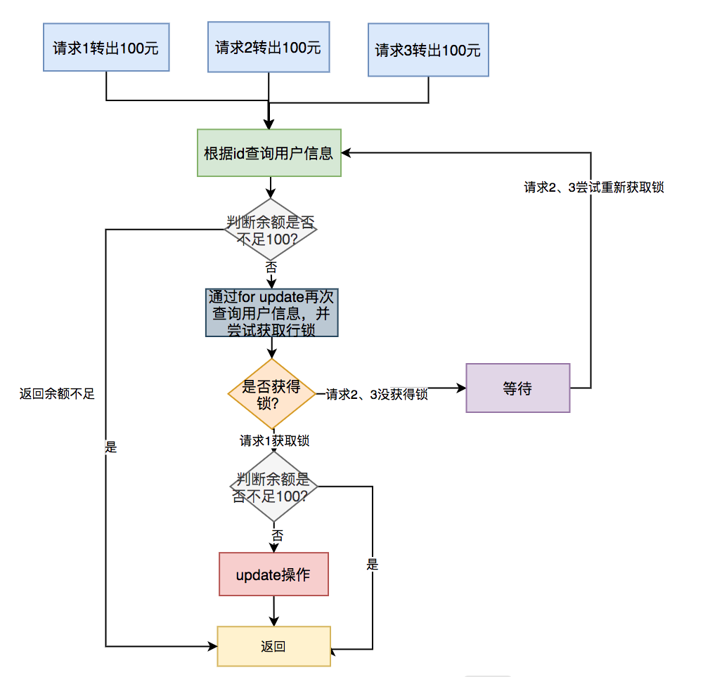
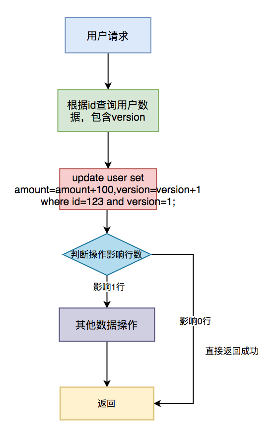

web api 设计。
接口的幂等性
接口幂等性是指用户对于同一操作发起的一次请求或者多次请求的结果是一致的，不会因为多次点击而产生了副作用。
- 有时我们在填写某些 form 表单时，保存按钮不小心快速点了两次，表中竟然产生了两条重复的数据，只是 id 不一样；
- 我们在项目中为了解决接口超时问题，通常会引入了重试机制。第一次请求接口超时了，请求方没能及时获取返回结果（此时有可能已经成功了），为了避免返回错误的结果（这种情况不可能直接返回失败吧？），于是会对该请求重试几次，这样也会产生重复的数据；
- MQ 消费者在读取消息时，有时候会读取到重复消息，如果处理不好也会产生重复的数据。
insert 操作，这种情况下多次请求，肯定会产生重复数据； update 操作，如果只是单纯的更新数据，这样是没有问题的：
|
|
如果还有计算，比如：
|
|
这种情况下多次请求，可能会导致数据错误。
insert 前先 select
用户请求->根据条件查询数据是否存在？ 是->update 否->insert

最简单的方案，不适用于并发场景。在高并发时，同一个用户的两个请求几乎同时到达，此时两个请求几乎同时 select，都发现数据库没有相关记录，于是都能执行后续业务逻辑。
所以对于重要场景（如发券、积分等），请求必须在用户级别具有排他性：同一时间同一个用户只能有一个请求在处理，多个同样的请求必须串行处理。
加悲观锁
在支付场景中，用户 A 的账号余额有 150 元，想转出 100 元，正常情况下用户 A 的余额只剩 50 元。一般情况下，SQL 是这样的：
|
|
如果出现多次相同的请求，可能会导致用户 A 的余额变成负数。 为了解决这个问题，可以加悲观锁，将用户 A 的那行数据锁住，在同一时刻只允许一个请求获得锁，更新数据，其他的请求则等待。通常情况下通过如下 SQL 锁住单行数据：
|
|

具体步骤：
- 多个请求同时根据 id 查询用户信息；
- 判断余额是否不足 100，如果余额不足，则直接返回余额不足；
- 如果余额充足，则通过 for update 再次查询用户信息，并且尝试获取锁；
- 只有第一个请求能获取到行锁，其余没有获取锁的请求，则等待下一次获取锁的机会；
- 第一个请求获取到锁之后，判断余额是否不足 100，如果余额足够，则进行 update 操作；
- 如果余额不足，说明是重复请求，则直接返回成功。
注意：如果使用的是 MySQL 数据库，存储引擎必须用 innodb。因为它才支持事务。此外，这里 id 字段一定要是主键或者唯一索引，不然会锁住整张表。 悲观锁需要在同一个事务操作过程中锁住一行数据，如果事务耗时比较长，会造成大量的请求等待，影响接口性能。此外，每次请求接口很难保证都有相同的返回值，所以不适合幂等性设计场景，但是在防重场景中是可以的使用的。
在这里顺便说一下，防重设计和幂等设计其实是有区别的：防重设计主要为了避免产生重复数据，对接口返回没有太多要求；而幂等设计除了避免产生重复数据之外，还要求每次请求都返回一样的结果。
加乐观锁
既然悲观锁有性能问题，为了提升接口性能，我们可以使用乐观锁。需要在表中增加一个 timestamp 或者version 字段，这里以 version 字段为例。 在更新数据之前先查询一下数据：
|
|
如果数据存在，假设查到的 version 等于 1，再使用 id 和 version 字段作为查询条件更新数据：
|
|
更新数据的同时 version+1。然后判断本次 update 操作的影响行数，如果大于 0，则说明本次更新成功，如果等于 0，则说明本次更新没有让数据变更。
由于第一次请求 version 等于 1 是可以成功的，操作成功后 version 变成 2 了。这时如果并发的请求过来，再执行相同的 SQL：
|
|
该 update 操作不会真正更新数据，最终 SQL 的执行结果影响行数是 0。因为 version 已经变成 2 了，where 中的 version=1 肯定无法满足条件。但为了保证接口幂等性，接口可以直接返回成功，因为version 值已经修改了，那么前面必定已经成功过一次，后面都是重复的请求。

具体步骤：
- 先根据 id 查询用户信息，包含 version 字段；
- 根据 id 和 version 字段值作为 where 条件的参数，更新用户信息，同时version+1；
- 判断操作影响行数，如果影响 1 行，则说明是一次请求，可以做其他数据操作；
- 如果影响 0 行，说明是重复请求，则直接返回成功。
加唯一索引
绝大数情况下，为了防止重复数据的产生，我们都会在表中加唯一索引，这是一个非常简单，并且有效的方案。
|
|
加了唯一索引之后，第一次请求数据可以插入成功。但后面的相同请求，插入数据时会报如下异常，表示唯一索引有冲突。
Duplicate entry '002' for key 'order.un_code
虽说抛异常对数据来说没有影响，不会造成错误数据。但是为了保证接口幂等性，我们需要对该异常进行捕获，然后返回成功。如果是 Java 程序需要捕获：DuplicateKeyException 异常，如果使用了 Spring 框架还需要捕获： MySQLIntegrityConstraintViolationException 异常。

- 用户通过浏览器发起请求，服务端收集数据；
- 将该数据插入 MySQL；
- 判断是否执行成功，如果成功，则操作其他数据（可能还有其他的业务逻辑）；
- 如果执行失败，捕获唯一索引冲突异常，直接返回成功。
假如一笔订单仅支持支付一次，那么就可以用在订单流水表用订单号做唯一键约束，当同一笔订单进行多次支付（插入流水）时就会因唯一键冲突而插入失败（账户余额变更操作和增加流水在一个数据库事务中，自然也不会成功）。
有些场景的唯一性约束体现在组合键上，比如签到，用户一天只能签到一次，那么就可以用“用户id+日期”这样的组合唯一键。当然，有些场景可能压根就不存在这样的唯一约束字段，比如增减积分、发券，此时必须创造出单独的约束字段来实现唯一性约束，比如给表增加一个 uniqid 并建立唯一键索引。生成唯一标志，可以采用如下方式：
- UUID，缺点是比较长（至少占用 16 字节），另外它是无序的，对 MySQL 这样的 B+ 树索引不是很友好
- 雪花算法：snowflake
建防重表
有时候表中并非所有的场景都不允许产生重复的数据，只有某些特定场景才不允许。这时候，直接在表中加唯一索引，显然是不太合适的。针对这种情况，我们可以通过建防重表来解决问题。
该表可以只包含两个字段：id 和 唯一索引。唯一索引可以是多个字段比如：name、code 等组合起来的唯一标识，例如：susan_0001。

- 用户通过浏览器发起请求，服务端收集数据；
- 将该数据插入 MySQL 防重表；
- 判断是否执行成功，如果成功，则做 MySQL 其他的数据操作（可能还有其他的业务逻辑）；
- 如果执行失败，捕获唯一索引冲突异常，直接返回成功。
需要特别注意的是：防重表和业务表必须在同一个数据库中，并且操作要在同一个事务中。
根据状态机
很多时候业务表是有状态的，比如订单表中有：1-下单、2-已支付、3-完成、4-撤销等状态。如果这些状态的值是有规律的，按照业务节点正好是从小到大，我们就能通过它来保证接口的幂等性。 假如 id=123 的订单状态是已支付，现在要变成完成状态。
|
|
第一次请求时，该订单的状态是已支付，值是2。所以该 update 语句可以正常更新数据，SQL 执行结果的影响行数是 1，订单状态变成了 3。
后面有相同的请求过来，再执行相同的 SQL 时，由于订单状态变成了 3。再用 status=2 作为条件，无法查询出需要更新的数据，所以最终 SQL 执行结果的影响行数是 0，即不会真正的更新数据。但为了保证接口幂等性，影响行数是 0 时，接口也可以直接返回成功。

- 用户通过浏览器发起请求，服务端收集数据；
- 根据id和当前状态作为条件，更新成下一个状态；
- 判断操作影响行数，如果影响了 1 行，说明当前操作成功，可以进行其他数据操作；
- 如果影响了 0 行，说明是重复请求，直接返回成功。
注意：该方案仅限于要更新的表有状态字段，并且刚好要更新状态字段的这种特殊情况，并非所有场景都适用。
加分布式锁
其实前面介绍过的加唯一索引或者加防重表，本质是使用了数据库的分布式锁，也属于分布式锁的一种。我们以 Redis 为例介绍分布式锁。目前主要有三种方式实现 Redis 的分布式锁：
- setNx 命令；
- set 命令；
- Redission 框架。
根据相关请求参数生成 redis key，比如在增加积分场景，可以根据“用户 id + 场景 id” 生成 key 作为锁，请求到来时先检查锁是否存在，如果存在则直接拒绝处理，不存在的话才进入下一步。这样就保证了请求的排它性。流程图如下：
- 用户通过浏览器发起请求，服务端会收集数据，并且生成订单号 code 作为唯一业务字段；
- 使用 redis 的 set 命令，将该订单 code 设置到 Redis 中，同时设置超时时间；
- 判断是否设置成功，如果设置成功，说明是第一次请求，则进行数据操作；
- 如果设置失败，说明是重复请求，则直接返回成功。
注意：分布式锁一定要设置一个合理的过期时间，如果设置过短，无法有效的防止重复请求。如果设置过长，可能会浪费redis的存储空间，需要根据实际业务情况而定。
然而，当你的数据库使用读写分离时，你会发现请求 redis 锁方案有时还是会出现漏网之鱼。
业务系统处理完成后会解除请求锁，此时同一个用户的重复请求就可以进来，但此时新数据可能还没有同步到从库，因而 select 仍然查不到，于是业务逻辑又被执行了一遍（如加了两次积分）。你可能觉得这种延迟在毫秒级，问题不大，但如果对方是脚本薅羊毛，这可能就是不容忽视的问题。这种情况必须结合数据库层面的约束来解决。
关于 Redis 分布式锁，再次唠叨一个老生常谈的细节。我们一般使用 Redis 的 set 带 nx 选项实现分布式锁：
set lock_key private_val ex 20 nx
其中 lock_key 和 private_val 是程序生成的。上面设置锁 lock_key，过期时间是 20 秒。其中关键在 nx 选项，它表示当 lock_key 不存在时才设置。这条指令是 setnx 的增强版，在 setnx 基础上增加了对过期时间的支持。
那么我们如何释放锁呢？直接执行 del lock_key？
不行的，程序只能释放由自己加的锁，如果直接 del，那么有可能会删除掉别的进程加的锁。比如当前进程执行超时，原来的锁过期了，而此时另一个进程刚好也加了个 lock_key 的锁，此时会把另一个进程的锁删了。
所以删除前必须判断 private_val 是不是当前进程生成的，所以必须先判断再比较：
|
|
还是有那么一点小问题的：这里执行了两条 Redis 命令，不具备原子性，可能出现第一条执行成功了第二条失败的情况（虽然概率很低），另外需要两次网络开销。有没有优化空间呢，可以使用 Redis 的 eval 命令执行 Lua 脚本来保证原子性（相关语言 SDK 都有支持）：
|
|
鲁棒性（健壮性）
“鲁棒”是音译，英文叫 Robustness，翻译过来是“坚固性，健壮性”的意思，所以接口的鲁棒性是指接口的健壮性如何。
接口的鲁棒性取决于它对异常场景的承载能力。什么样的接口不具备鲁棒性呢？
如果一个接口严重依赖于外部输入的合法性以及第三方服务的正确性，一旦外部输入非预期内容（如含有 SQL 注入的字符串），或者所依赖的第三方服务（接口）崩溃了（如超时），该接口就会出现各种未知问题（最典型的是数据一致性问题，如卡账扣款了但订单还是未支付状态），那么我们说该接口是脆弱的，不具备鲁棒性。几乎所有的程序员都能写出可用的接口（实现正常流程），但至少有一半（其实不止）的程序员写不出健壮的接口。这里的异常主要包括：
- 输入异常
- 流程异常
- 性能异常
输入异常
“不要信任外部输入”是常识，但不是所有人都正确处理这块。这里主要包括以下几块：
- 参数类型限制；
- 缺省参数处理；
- 恶意输入的拦截；
考虑到接口调用方编程语言的异构性以及其他复杂因素，参数类型尽量只使用数值类型和字符串，尽量不要用 bool 型（true、false）、Null——有些情况下对方可能给你传的是字符串“true”而不是 bool 值 true，如果你打算用这些类型，请在接口内部消化掉字符串 “true”、“false”。
接口参数应遵循”最小化输入“原则，即调用端只需要关心他关心的参数，接口自身应能正确处理参数缺省值。
我见过有些接口有二三十个参数，每个参数都是必填的——调用端对不需要的参数必须传缺省值（0 或空字符串），对接的人一边对接一边崩溃，还经常因某个参数传入错误导致接口报错。
输入异常这块重点在字符串类型上。
字符串的第一个威胁是 XSS 攻击。
字符串的第二个威胁是 SQL 注入。几乎所有框架都对SQL注入提供了直接支持，只要你不在代码里面写原生 SQL 几乎就不会出现 SQL 注入问题。例如：mybatis中使用参数占位符时，应该使用#{}，而不是${}。
字符串的第三个威胁是字符串的格式。字符串是否超长？数据库中的身份证号字段是varchar(18)，如果用户输入了20位的号码，数据库就会直接报错，正确的处理方法是应该在接受到参数时，就对参数做长度校验。字符串是否符合格式？通常来说手机号只有11位且纯数字（不包含国家的情况），程序应该用正则表达式对手机号字段做校验。推荐使用JSR303做参数校验。
流程异常
这里的流程异常不是说代码没有正确实现业务逻辑——那属于功能异常，不属于鲁棒性考虑的范围。这里说的流程异常是指在正常执行流中出现了不可控的异常。
想想我们过去开发的接口，有没有出现过以下情况：
- 读取磁盘中的文件——有没有考虑读取失败会怎样？
- 写入磁盘文件——有没有考虑写入失败会怎样（如目录不存在）？
- 读取系统时间——有没有考虑如果系统时间错误会怎样？
- 计算某个比率（如中奖率）——有没有考虑除数是 0 的情况（如压根没人抽奖）？
- 调某个外部接口——有没有考虑接口调用失败（如超时）的情况？
- 更重要的，当流程中的某一步失败了，其他步该如何处理（以及已经产生的数据如何处理）？
以上异常有两个特征：
- 大部分是不可控的（无法通过程序自身避免问题发生）；
- 只要系统运行时间足够长，就一定会发生（除非系统自身没有涉及到这些方面，如压根没有涉及到远程调用）；
健壮的程序要能够正确地处理这些异常，保证数据的一致性。这里有两层含义：
- 程序要处理（而不是忽略）这些异常；
- 程序能正确地处理这些异常，让程序在发生异常时的行为符合预期；
作为开发人员我们不能有”幸运儿“思想：我的系统不会发生这些问题。
但这不代表我们的程序一定能够消化掉这些异常并让流程继续进行下去——有时候让流程终止才是唯一正确的方式，但由于程序没有处理这些异常（或者处理不当）导致流程继续进行，进而导致数据一致性问题（比如在储值卡充值场景中，调支付接口失败，但程序没有判断该异常，仍然往下执行，给用户卡账充了钱）。处理这些异常的方式主要有以下几种：
终止执行流
比如储值卡消费场景，如果储值卡扣款接口调失败了，则要终止执行流，防止出现扣款失败但订单状态变成已支付的数据一致性问题
预处理
比如写文件的场景，可以先判断一下目录是否存在，不存在则先创建目录然后再写文件；计算比率时可先判断分母（如抽奖次数）是否为 0，如果为 0 则比率直接为 0，不再执行除法运算。
重试
这在远程调用时用得比较多，当接口超时时，一段时间后（如 1 秒）重试一次，还不行则终止执行流。但需要注意，一般接口超时往往意味着对方系统负载高（或者网络拥塞），大量的重试会加重对方系统负担，最终崩溃掉。
另外重试也会导致本次请求长时间占用本服务器资源，如果对方系统长时间无法恢复，本系统则会产生大量的请求进程（大家都在那重试），最终引发雪崩。
如果决定引入重试机制，则需要合理设置超时时间（比如 2 秒。时间越长请求占用资源越久，越容易导致雪崩），重试次数也不能太多，可能还要结合熔断和限流一起使用。
异步补偿
对于执行流中的非核心节点出现的异常（主要是远程调用失败的场景），我们可以先做异常登记，然后执行流继续往下执行。而后我们通过异步任务去重试这些异常节点。
比如用户消费返券的场景，在支付回调的处理流程中会调券接口给用户发券，如果该接口调用失败（超时），我们除了可采用重试机制，还可以在数据库中（或消息队列中）写一条失败待重试的记录，由异步处理程序稍后重试。相比同步重试机制，异步重试不会导致本次请求占用太久服务器资源，本次请求的后续流程仍然能够快速执行完成。
另外异步重试的时间间隔可以更长（如 10 秒一次，或者随着重试次数而增加时间间隔），这样对被调用系统的压力也更小。不过异步重试也是有限制条件的。
首先相关节点可以异步化，后续节点不需要依赖该节点的输出结果。
其次业务对该节点的时效性具有较宽的容忍度（如消费返券的场景，即使延迟几秒钟发券也无所谓）。
性能异常
健壮的接口应具备一定的性能承诺能力：即并发处理能力（在一定并发量——比如 1000 qps——的情况下每个请求的平均处理时间）。
性能问题来自三个方面：
- 自身代码质量导致的性能问题；
- 所依赖的服务出现性能问题而造成的连锁反应；
- 异常调用量造成的额外压力（如大促）；
大部分接口的性能问题来自接口自身的实现缺陷——如从不使用缓存、很少创建索引。所以优化接口性能总是要先从缓存和索引着手，这是成本最低、最立竿见影的做法。
有很大一部分的性能问题来自所依赖的服务（接口）。一般有两种解决办法：
- 找到对方，让对方优化接口性能（如果是部门内部团队，该方案比较可行）；
- 将调用异步化；
在接口自身已经达到优化极限的情况下，还承受不了并发压力，说明需要水平扩容了——往集群中再加几台服务器。
但现实往往没那么简单，因为性能瓶颈往往出现在存储上而非业务服上，而存储恰恰是最难扩展的部分。
这里不会去讨论怎么设计高并发系统，也不会去讨论熔断限流这些”高级“的话题（其实一点都不高级）——这里要强调的是，在”言必高并发“的今天，对于大部分公司来说，性能优化性价比最高的三剑客仍然是：缓存、索引、异步化。
除了这三种异常，其实前面讨论的幂等性也属于鲁棒性范畴，它说的是接口在异常调用的情况下对数据一致性的保障能力。
安全性
前面讲的 XSS 攻击和 SQL 注入也属于安全范畴，不过此处说的安全性是指防止接口被非法调用。 主要有两种类型的接口调用：
- 前后端接口调用；
- 后端之间的接口调用；
两种调用者的区别是，前端完全暴露在外部（相当于裸体），而后端调用者本身是处于各种保护之中的。
前端调用后端
前后端的信任是基于登录的（账号密码登录、手机号验证码登录、微信/支付宝 Oauth 授权登录等），用户登录成功后，后端会生成一个登录标识给到前端，前端后续请求后端都会带上该标识。登录标识有两层含义：
- 验证前后端交互的合法性：该前端此时能否调该接口。
- 验证操作的合法性：本次接口调用是否有权操作其指定的数据（只能操作登录用户权限范围内的数据）。
常用的登录标识有 session 和 token 两种方案。
Session 方案：
传统的基于浏览器的 Web 应用多采用 Session 方案。用户登录成功后后端生成一个随机串（sessionId），通过 Cookie 传递给前端；前端调后端接口时同样通过 Cookie 将 sessionId 传递给后端，后端校验 sessionId 的合法性，然后执行后续操作。
流程如下：
前端调后端接口时由浏览器自动将 Cookie 携带入 HTTP Header 中，而后端 sessionId 的生成与维护一般也由框架底层支持——就是说 Session 方案基本是个开箱即用的方案，实在是太方便了（方便到以至于很多人并不清楚 Session 的运作机制）。
Session 方案存在以下几个问题：
1.跨域问题。 Cookie 默认是不支持跨域的，这对需要跨域访问的站点可能是个问题。当然解决方案也有多种，如将 Cookie 的 domain属性设置为一级域名；采用 sso。
2.分布式访问问题。 一般框架默认的 session 存储方案是本地文件存储，这会导致在集群环境登录失效——用户登录的时候在 A 服务器生成的 session，自然存储在 A 服务器本地，用户后续的请求如果打到 B 服务器，由于 B 服务器没有该用户的 session，就会报错。
解决方案也有很多种，如采用集中式存储方案（一般采用 Redis，大多数框架也支持一键配置 Redis 作为 session 存储方案）；配置负载均衡规则，让同一个客户端的请求都打到同一台服务器。
3.CSRF 攻击。 由于 sessionId 是通过 Cookie 传输的，”浏览器自动将 Cookie 写入 HTTP Header 头“这一做法带来方便的同时也带来了危险——CSRF（跨站请求伪造攻击）利用这一特性可以在别的网站上伪装成合法用户请求实施非法操作。当然我们可以通过 CSRF Token 来防范 CSRF 攻击。
4.状态保持。 由于 sessionId 本身并不携带用户信息（如 userId），所以服务器端必须将用户基本信息和 sessionId 一同存储起来，如此才能知道该登录会话是由哪个用户发起的。当登录量很大时，这是一笔不小的存储开销。
5.移动端环境。 有些移动端环境不支持 Cookie，此时开发人员不得不自行实现 Cookie 存储与传输。 上面的情况都是可以解决的——问题在于是不是所有人都解决了这些问题呢？ 肯定不是的，现实中大量的网站没有做 CSRF 防护，没有将 Cookie 设置成 HttpOnly，没有做 XSS 注入和 SQL 注入过滤。 所以有没有其它方案能够规避掉 Session 方案的这些问题呢？ 方案是有的，也就是目前业界非常青睐的 Token 方案。
Token
既然 Session 方案的问题都出现在 Cookie 上（具体是 Cookie 的客户端存储和传输机制上），那我们可以对原先的方案稍作改造，让它不依赖于 Cookie。
后端生成登录标识（为了和 Session 方案区分，此处我们叫它 token）后，通过自定义响应头（如就叫 Login-Token）将 token 返回给前端，前端将该 token 以适当的方式存储起来（如 localStorage）。
前端对后端的后续请求都在 HTTP 请求头中带上该 token，后端先校验 token 的合法性，并通过 token 拿到登录用户信息，然后执行后续流程。
和 Session 方案一样，Token 也是通过 HTTP Header 传输的（Cookie 也是在 HTTP Header 中），只不过 Token 的存储和传输都是由应用层程序自己控制的，没有利用浏览器的自动机制，CSRF 伪造请求时自然带不上该参数。
由于不需要依赖 Cookie，token 方案也就不存在跨域问题，并且在移动端环境也很好使用。
此 token 方案在服务器端的行为和 Session 几乎是完全一致的：它也需要生成一个随机串（token），并且要将 token 串和用户基本信息以适当的方式保存起来以供后续使用。
也就是说该 token 方案仍然需要保存状态信息。如果该状态信息存储在服务器本地，则同样会存在分布式访问问题。
我们并没有解决 session 方案的第 2、4 两点问题。
服务器端之所以要存储状态信息，是因为 token 自身没有携带状态（用户）信息——那如果我们让 token 自身携带这些信息呢？好像可行。比如我们这样生成 token：
|
|
如此，服务器后续从前端拿到 token 后 base64_decode 就能拿到用户信息了。
可行吗？当然不行！服务器端之所以存储 token 相关信息，一方面是为了后面能拿到登录用户信息，另外一方面是为了能够校验客户端传过来的 token 是不是服务器端生成的，而不是客户端自己伪造的（回想一下前面提到的”登录标识“的两层含义）。现在服务器端没存 token 了，怎么检验前端传过来的 token 是否有效？如果我们能够让前端伪造不了呢？
所谓伪造，跟”篡改“是一个意思。业界防篡改的常用手段是签名。ok，我们给刚才生成的 token 加上私钥签名：
|
|
如上，我们得到的 token 串长这样子：xxxxxxxxxx.yyyy，其中 x 部分是用户信息 base64 编码后的值，y 部分是对 x 部分的签名。
JWT
JWT 是 JSON Web Token 的缩写，是 RFC 7519 定义的鉴权和信息交互标准。
从名字可知，它是用 json 格式存储信息，主要用于 web 接口交互（但不限于前后端交互的场景），在系统间（前后端、后端之间）接口交互时实现鉴权和非敏感信息传输。
先看看 JWT token 到底长什么样子：
|
|
看到这串”乱码“中两个小小的点（.）没？它将这段字符串分成三个部分：
|
|
我们对上面 token 的前两部分 base64_decode 看看里面是什么东西：
|
|
第一部分（首部）包含了类型（typ，此处是 JWT）和签名算法（alg，即用什么算法生成第三部分签名串，此处用的是 HMAC_SHA256）。
第二部分（有效载荷）可以自己定义（如上面的 name），RFC 标准定义了一些通用的字段（如上面的 sub、iat）。
你有没有发现，任何人都可以查看前两部分的内容？
是的，JWT 前两部分是明文，所以不要放敏感信息（你也可以对前两部分加密，但一般我们不这么搞）。JWT 的真正用途是签名而不是加密。
现在我们用 JWT 来实现前后端无状态交互。
|
|
张三登录成功后，后端将上面生成的 JWT token 通过 HTTP 响应头（假如叫 Authorization）返回给前端，而后前端请求后端都会带上如下 HTTP Header：
|
|
后端拿到前端传的 token，先对前两部分计算签名，和第三部分比较，如果一致，说明该 token 合法，并从从有效载荷中解析出用户信息。后端并没有存储 token，完全是从前端传过来的 token 中解析出用户（状态）信息，一方面避免了后端存储的开销，同时也解决了集群服务的访问问题，堪称完美！
我们在有效载荷中增加了过期时间（exp），该 token 只在该时间之前有效。
这里有个问题，我们假设用户是在 11:00:00 登录的，登录有效期是 1 个小时，即 token 的过期时间是 12:00:00。假设用户在 11:59:58 访问某个页面，此时 token 未过期，能正常访问；用户在该页面停留了 2 秒钟，然后点击某个按钮，此时 token 过期了，后端会返回”登录过期“错误，前端就会跳转到登录界面。你能想象此时用户心里有多少只马在奔腾吗？
所以和 session 方案一样，必须要有 token 刷新机制，保证在用户频繁操作的情况下，token 不会过期。JWT 的 token 刷新机制很简单，我们验证前端的 token 没问题后，检查一下有效期，如果过期了，那自然就返回错误。如果没有过期，我们会根据当前时间生成一个新的 token 给到前端，前端用这个新 token 替换掉原来的 token 即可。后端在每次接口响应头部都加上：
|
|
如此，用户只有在 1 小时内没有任何操作的情况下才会退出登录。无论是采用何种方案，有一点需要记住：前后端通信一定要使用 https，否则在登录之初就已经不安全了。
后端之间调用
后端相较于前端的一个优势是，后端双方都可以持有秘钥。根据数据敏感度不同，有两种不同级别的保障需求：
- 防篡改。对于一般的数据，只需要保障数据在传输中不会被篡改即可。此种场景可采用 appid + secret 的数字签名方案；
- 防窥视。一些敏感性数据，不但要防篡改，还要防止被非法接受者查看，此时需要采用加解密方案（如采用 RSA 算法）；
数字签名方案需要双方事先协商秘钥（secret）；非对称加密方案需要事先协商公钥私钥对。这里不详细讲解两种方案的具体实现细节，主要提一下很多人在设计接口鉴权时都忽视的一种风险：接口重放攻击。
比如服务器 A 调服务器 B 接口：
|
|
服务器 B 接收到请求后，使用同样的秘钥和签名算法对请求参数（sign 除外）进行签名，发现和传过来的 sign 一致，便认为是合法请求。有什么问题吗？
一年后，只要双方的 secret 和签名算法没变，上面这个 url 仍然是个合法请求——这是个永不失效的签名。为方便排查问题，调用双方一般都会把请求信息记录日志，如果日志内容遭泄露，里面所有的请求都能被重放。
所以我们必须让签名有个有效期，过了一定的时间后原来的签名就自动失效了。我们在请求参数中加入请求时间，B 接收到请求后，先判断该时间跟 B 的本地时间差是否在一定范围内（如 5 分钟），超过这个时间范围则拒绝请求（当然这要求双方服务器的时间不能错得离谱）。这样就相当于签名只有 5 分钟的有效期，大大降低被重放的概率。
|
|
除了签名和加密，还可以结合其他方面加固接口的安全性，如对外接口（非局域网调用）必须使用 https，采用 IP 白名单机制等。
如何设计一个安全对外的接口（加密、验签）
密码学相关概念(明文、密文、密钥、加密、解密)
明文：指没有经过加密的信息/数据。 密文：明文被加密算法加密之后，会变成密文，以确保数据安全。 密钥：一种参数，在明文转换为密文或将密文转换为明文的算法中输入的参数。密钥分为对称密钥与非对称密钥。 加密：将明文变成密文的过程。 解密：将密文还原为明文的过程。
对称加密：加密和解密使用相同密钥的加密算法。
非对称加密：非对称加密算法需要两个密钥（公开密钥和私有密钥）。公钥与私钥是成对存在的，如果用公钥对数据进行加密，只有对应的私钥才能解密。
公钥和私钥：公钥与私钥是成对存在的密钥，如果用公钥对数据进行加密，只有用对应的私钥才能解密。 其实，公钥就是公开的秘钥，私钥就是要你私自保存好的秘钥。非对称加密算法需要有一对公私钥~ 假设你有一个文件，你用字母a加密，只有字母b才能解密;或者你用b加密，只有a才能解密，那么a和b就是一对公私钥。如果密钥a公开，密钥b你就要私自保存好啦，这时候密钥a就是公钥，密钥b就是私钥。相反，如果b公开，a就要保存好，这时候呢，秘钥b就是公钥，秘钥a就是私钥。
加签：用Hash函数把原始报文生成报文摘要，然后用私钥对这个摘要进行加密，就得到这个报文对应的数字签名。通常来说呢，请求方会把数字签名和报文原文一并发送给接收方。

验签：接收方拿到原始报文和数字签名后，用同一个Hash函数从报文中生成摘要A。另外，用对方提供的公钥对数字签名进行解密，得到摘要B，对比A和B是否相同，就可以得知报文有没有被篡改过。
为什么需要加签验签： 有些朋友可能觉得，我们不是用公钥加密，私钥解密就好了么？下面举例说明。 假设现在有A公司，要接入C公司的转账系统。在一开始呢，C公司把自己的公钥寄给A公司，自己收藏好私钥。 A公司这边的商户，发起转账时，A公司先用C公司的公钥，对请求报文加密，加密报文到达C公司的转账系统时，C公司就用自己的私钥把报文揭开。假设在加密的报文在传输过程中，被中间人Actor获取了，他也郁闷，因为他没有私钥，看着天鹅肉，又吃不了。本来想修改报文，给自己账号转一个亿的，哈哈。这个实现方式看起来是天衣无缝，稳得一匹的。
但是呢，如果一开始，C公司把公钥发给公司A的时候，就被中间人Actor获取到呢，这样就出问题了。中间人Actor截取了C的公钥，他把自己的公钥发给了A公司，A误以为这就是C公司的公钥。A在发起转账时，用Actor的公钥，对请求报文加密，加密报文到在传输过程，Actor又截取了，这时候，他用自己的私钥解密，然后修改了报文（给自己转一个亿），再用C的公钥加密，发给C公司，C公司收到报文后，继续用自己的私钥解密。最后是不是A公司的转账账户损失了一个亿呢。

C公司是怎么区分报文是不是来自A呢，还是被中间人修改过呢？为了表明身份和报文真实性，这就需要加签验签了。 A公司把自己的公钥也发送给C公司，私钥自己保留着。在发起转账时，先用自己的私钥对请求报文加签，于是得到自己的数字签名。再把数字签名和请求报文一起发送给C公司。C公司收到报文后，拿A的公钥进行验签，如果原始报文和数字签名的摘要内容不一致，那就是报文被篡改啦。
有些朋友可能有疑问，假设A在发自己的公钥给C公司的时候，也被中间人Actor截取了呢。嗯嗯，我们来模拟一波Actor又截取了公钥，看看Actor能干出什么事情来~哈哈 假设Actor截取到A的公钥后，随后也截取了到A发往C的报文。他截取到报文后，第一件想做的事肯定是修改报文内容。但是如果单单修改原始报文是不可以的，因为发过去C公司肯定验签不过啦。但是呢，数字签名似乎解不开，因为消息摘要算法（hash算法）无法逆向解开的，只起验证的作用呢…所以呢，公钥与私钥是用来加密与加密的，加签与验签是用来证明身份，以免被篡改的。
加密算法简介
消息摘要算法
- 相同的明文数据经过相同的消息摘要算法会得到相同的密文结果值。
- 数据经过消息摘要算法处理，得到的摘要结果值，是无法还原为处理前的数据的。
- 数据摘要算法也被称为哈希（Hash）算法或散列算法。
- 消息摘要算法一般用于签名验签。
消息摘要算法主要分三类：MD（Message Digest，消息摘要算法）、SHA（Secure Hash Algorithm，安全 散列算法）和MAC（Message Authentication Code，消息认证码算法）。
MD家族算法
MD（Message Digest，消息摘要算法）家族，包括MD2，MD4，MD5。
- MD2，MD4，MD5 计算的结果都是是一个128位（即16字节）的散列值，用于确保信息传输完整一致。
- MD2的算法较慢但相对安全，MD4速度很快，但安全性下降，MD5则比MD4更安全、速度更快。
- MD5被广泛应用于数据完整性校验、数据（消息）摘要、数据加密等。
- MD5，可以被破解，对于需要高度安全性的数据，专家一般建议改用其他算法，如SHA-2。2004年，证实MD5算法无法防止碰撞攻击，因此不适用于安全性认证，如SSL公开密钥认证或是数字签名等用途。
举个例子，看看如何获取字符串的MD5值吧：
|
|
运行结果： 123,MD5加密后:202cb962ac59075b964b07152d234b70
ShA家族算法
SHA（Secure Hash Algorithm，安全散列算法），包括SHA-0、SHA-1、SHA-2(SHA-256,SHA-512,SHA-224,SHA-384等)、SHA-3。它是在MD算法基础上实现的，与MD算法区别在于摘要长度，SHA 算法的摘要长度更长，安全性更高。
- SHA-0发布之后很快就被NSA撤回，因为含有会降低密码安全性的错误，它是SHA-1的前身。
- SHA-1在许多安全协议中广为使用，包括TLS、GnuPG、SSH、S/MIME和IPsec，是MD5的后继者。
- SHA-2包括SHA-224、SHA-256、SHA-384、SHA-512、SHA-512/224、SHA-512/256。它的算法跟SHA-1基本上相似，目前还没有出现明显弱点。
- SHA-3是2015年正式发布，由于对MD5出现成功的破解，以及对SHA-0和SHA-1出现理论上破解的方法，SHA-3应运而生。它与之前算法不同的是，它是可替换的加密散列算法。
SHA-1、SHA-2(SHA-256,SHA-512,SHA-224,SHA-384)等算法是比较常用的，我们来看看跟MD5的对比吧
| 算法类型 | 摘要长度（bits） | 最大输入消息长度（bits） | 碰撞攻击（bits） | 性能示例(MiB/s) |
|---|---|---|---|---|
| MD5 | 128 | 无限 | ≤18（发现碰撞） | 335 |
| SHA-1 | 160 | 2^64 − 1 | <63（发现碰撞） | 192 |
| SHA-224 | 224 | 2^64 − 1 | 112 | 139 |
| SHA-256 | 256 | 2^64 − 1 | 128 | 139 |
| SHA-384 | 384 | 2^128 − 1 | 192 | 154 |
| SHA-512 | 512 | 2^128 − 1 | 256 | 154 |
MAC算法家族
MAC算法 MAC（Message Authentication Code，消息认证码算法），是带密钥的Hash函数。输入密钥和消息，输出一个消息摘要。它集合了MD和SHA两大系列消息摘要算法。
- MD 系列算法: HmacMD2、HmacMD4 和 HmacMD5 ；
- SHA 系列算法：HmacSHA1、HmacSHA224、HmacSHA256、HmacSHA384 和 HmacSHA512 。
对称加密算法
加密和解密使用相同密钥的加密算法就是对称加密算法。常见的对称加密算法有AES、3DES、DES、RC5、RC6等。
DES
数据加密标准（英语：Data Encryption Standard，缩写为 DES）是一种对称密钥加密块密码算法。 DES算法的入口参数有三个：Key、Data、Mode。
- Key: 7个字节共56位，是DES算法的工作密钥；
- Data: 8个字节64位，是要被加密或被解密的数据；
- Mode: 加密或解密。
3DES
三重数据加密算法（英语：Triple Data Encryption Algorithm，又称3DES（Triple DES），是一种对称密钥加密块密码，相当于是对每个数据块应用三次数据加密标准（DES）算法。
AES
AES，高级加密标准（英语：Advanced Encryption Standard），在密码学中又称Rijndael加密法，是美国联邦政府采用的一种区块加密标准。
- 采用对称分组密码体制，密钥长度为 128 位、 192 位、256 位，分组长度128位。
- 相对于DES ，AES具有更好的 安全性、效率 和 灵活性。
非对称加密算法
非对称加密算法需要两个密钥：公钥和私钥。公钥与私钥是成对存在的，如果用公钥对数据进行加密，只有用对应的私钥才能解密。主要的非对称加密算法有：RSA、Elgamal、DSA、D-H、ECC。
RSA算法
- RSA加密算法是一种非对称加密算法,广泛应用于加密和数字签名
- RSA算法原理：两个大素数的乘积进行因式分解却极其困难，因此可以将乘积公开作为加密密钥。
- RSA是被研究得最广泛的公钥算法，从提出到现在，经历了各种攻击的考验，普遍认为是目前最优秀的公钥方案之一。
DSA
- DSA(Digital Signature Algorithm,数字签名算法),也是一种非对称加密算法。
- DSA和RSA区别在，DSA仅用于数字签名，不能用于数据加密解密。其安全性和RSA相当，但其性能要比RSA好。
ECC 算法
- ECC（Elliptic Curves Cryptography，椭圆曲线密码编码学），基于椭圆曲线加密。
- Ecc主要优势是，在某些情况下，它比其他的方法使用更小的密钥，比如RSA加密算法，提供相当的或更高等级的安全级别。
- 它的一个缺点是，加密和解密操作的实现比其他机制时间长 (相比RSA算法，该算法对CPU 消耗严重)。
国密算法
国密即国家密码局认定的国产密码算法。为了保障商用密码的安全性，国家商用密码管理办公室制定了一系列密码标准，即SM1，SM2，SM3，SM4等国密算法。
SM1
- SM1，为对称加密算法，加密强度为128位，基于硬件实现。
- SM1的加密强度和性能，与AES相当。
SM2
- SM2主要包括三部分：签名算法、密钥交换算法、加密算法
- SM2用于替换RSA加密算法，基于ECC，效率较低。
SM3
- SM3，即国产消息摘要算法。
- 适用于商用密码应用中的数字签名和验证，消息认证码的生成与验证以及随机数的生成。
SM4
- SM4是一个分组算法，用于无线局域网产品。
- 该算法的分组长度为128比特，密钥长度为128比特。
- 加密算法与密钥扩展算法都采用32轮非线性迭代结构。
- 解密算法与加密算法的结构相同，只是轮密钥的使用顺序相反，解密轮密钥是加密轮密钥的逆序。
- 它的功能类似国际算法的DES。
加签验签相关Java的API
java.security.Signature.getInstance(String algorithm);
- 根据对应算法，初始化签名对象
- algorithm参数可以取SHA256WithRSA或者MD5WithRSA等参数，SHA256WithRSA表示生成摘要用的是SHA256算法，签名加签用的是RSA算法
KeyFactory.getInstance(String algorithm);
- 根据对应算法,生成KeyFactory对象，比如你的公私钥用的是RSA算法，那么就传入RSA
KeyFactory.generatePrivate(KeySpec keySpec);
- 生成私钥，加签用的是私钥哈，所以需要通过KeyFactory先构造一个私钥对象。
java.security.Signature.initSign(PrivateKey privateKey)
- 加签用的是私钥，所以传入私钥，初始化加签对象
java.security.Signature.update(byte[] data)
- 把原始报文更新到加签对象
java.security.Signature.sign();
- 进行加签操作
验签相关API
java.security.Signature.getInstance(String algorithm);
- 根据对应算法，初始化签名对象，注意验签和加签是需要用相同的algorithm算法参数
KeyFactory.getInstance(String algorithm);
- 根据对应算法,生成KeyFactory对象
KeyFactory.generatePublic(KeySpec keySpec);
- 生成公钥，验签用的是公钥，通过KeyFactory先构造一个公钥对象
java.security.Signature.initVerify(publicKey);
- 公钥验签，所以传入公钥对象参数，初始化验签对象
java.security.Signature.update(byte[] data)
- 把原始报文更新到验签对象
java.security.Signature.verify(byte[] signature);
- 进行验签操作
加签验签代码
|
|